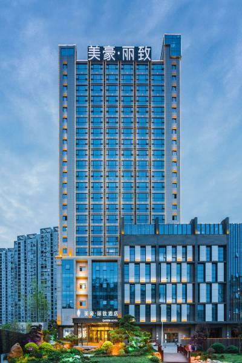
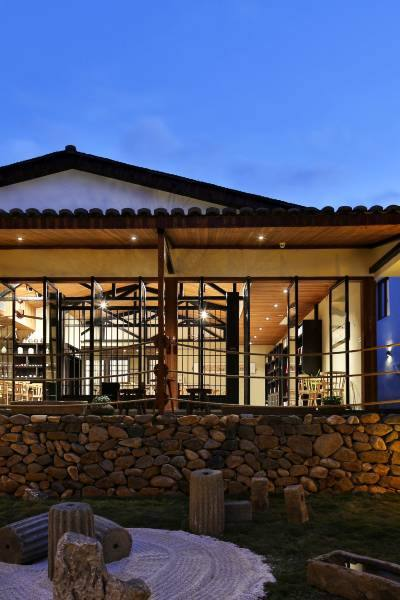
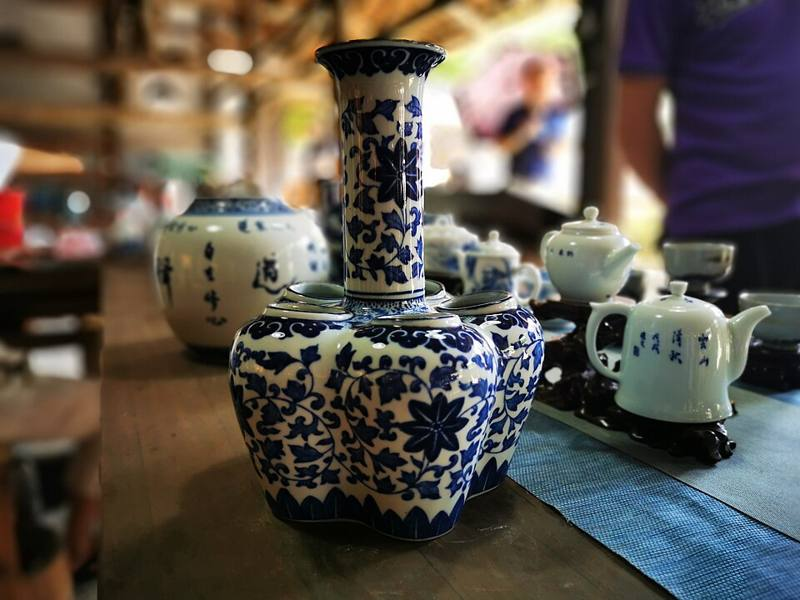
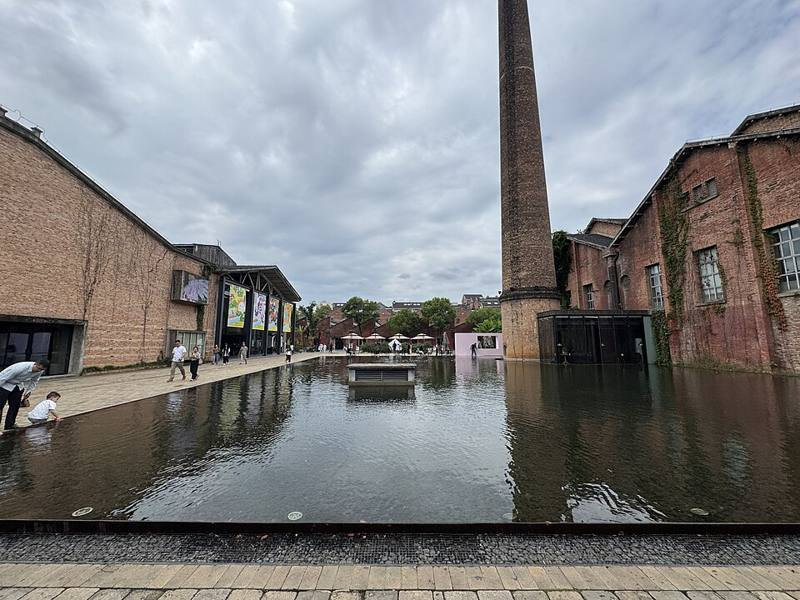

🗺️ 路线总览
🚄 深圳 → 南昌（G2718，已购）→南昌住 2 晚→🚄 南昌 → 景德镇（约 1 小时 20 分钟）→景德镇住 2 晚→🚄 景德镇北 → 深圳北
| 日期 | 城市 | 主要安排 | 住哪里 |
|---|
| 11/17 周二 | 南昌 | 到达，午休，傍晚逛万寿宫，看滕王阁夜景 | 南昌 |
| 11/18 周三 | 南昌 | ⭐ 八一南昌起义纪念馆、八一广场（红色景点），下午登滕王阁 | 南昌 |
| 11/19 周四 | 南昌 → 景德镇 | 上午坐高铁，下午逛陶阳里、御窑厂 | 景德镇 |
| 11/20 周五 | 景德镇 | 古窑民俗博览区，孩子亲手拉坯、画瓷，晚上逛陶溪川 | 景德镇 |
| 11/21 周六 | 景德镇 → 深圳 | 睡到自然醒，中午坐车回深圳 | — |
✅ 今天和出发前要办的事
| 什么时候 | 要办的事 | 说明 |
|---|
| 今天（11/3） | 订南昌酒店 2 间，11/17 入住，11/19 退房 | 首选美豪丽致·豪华双床房（每间 2 张双人床，含早餐） |
| 今天（11/3） | 订景德镇酒店 2 间，11/19 入住，11/21 退房 | 首选陶舍度假酒店·家庭房（1 张大床 + 1 张双人床，最多住 3 人） |
| 订完酒店 | 给两家酒店打电话 | ①确认 1 位大人带 3 个孩子能住一间；②两间房安排在同一层、挨在一起；③要无烟房。都选“免费取消”的价格。 |
| 约 11/5 | 买 11/19 南昌 → 景德镇北的票 | 推荐 G5118（南昌西 09:21 发车）。12306 一般提前 15 天开售 |
| 约 11/7 | 买 11/21 景德镇北 → 深圳北的票 | 推荐 G3327（12:53 发车）或 G2735（10:50 发车） |
| 出发前 3–7 天 | 预约八一南昌起义纪念馆 | 免费，但每个人（包括孩子）都要在微信公众号或小程序实名预约，约 11/18 上午 |
| 出发前 3–7 天 | 预约御窑博物馆、买古窑门票 | 在微信搜索官方公众号购买或预约；陶艺 DIY 可以到了现场再报名 |
🏨 酒店推荐（已联网查过，下面的房型当时都还能订）
2026-11-03 在 Trip.com（携程国际版）查询，只看“2 张床”的房型。价格为每间每晚、含税。其他平台价格可能有点不同，可以比一下。标着“只剩 1–2 间”的房型要尽快订。
📍 南昌（11/17—11/19，2 晚）

美豪丽致酒店（万寿宫滕王阁店） ⭐ 首选含早餐
评分 9.6/10（12,290 条点评）｜四钻｜豪华双床房，2 张双人床｜可免费取消
¥328 /间/晚（原价 ¥517）｜2 晚 ¥696/间，2 间共约 ¥1,392
- 📍 朝阳洲中路 199 号，走路就能到滕王阁、万寿宫、大士院美食街
- 👶 0–12 岁孩子不加床可以免费住；早餐：身高 1.2 米以下免费，1.2 米以上 ¥58/位
- 🛡️ 24 小时前台，有门禁、监控和保安，不收押金，有洗衣房
- ☎️ 0791-87083333｜14:00 后入住，14:00 前退房｜不能加床
| 南昌备选 | 评分 | 有房的房型 | 每间每晚 | 说明 |
|---|
| 观澜花园酒店（滕王阁八一广场店） | 9.4（1,233 条） | 雅致双床房 | ¥143 | 最便宜，就在八一起义纪念馆旁边，2025 年新开。查询时只剩 2 间 |
| 桔子酒店（滕王阁万寿宫店） | 9.6（3,463 条） | 精选双床房（有落地窗） | ¥364 | 2025 年新开，在八一广场和滕王阁之间 |
| 南昌滕王阁美居江景酒店 | 9.5（8,153 条） | 高级房，2 张单人床 | ¥409 | 过马路就是滕王阁，12 岁及以下孩子免费吃早餐。查询时只剩 1 间 |
📍 景德镇（11/19—11/21，2 晚）

陶舍度假酒店（陶阳里景区陶溪川步行街店） ⭐ 首选家庭房
评分 9.4/10（5,913 条点评）｜四钻｜2 号楼巷外静谧家庭房：1 张大床 + 1 张双人床，最多住 3 人｜可免费取消
¥278 /间/晚（原价 ¥311）｜2 晚 ¥590/间，2 间共约 ¥1,180
- 📍 就在陶阳里、御窑厂旁边，走路就能逛；去陶溪川、古窑打车 10 分钟左右
- 👨👩👧 房型最适合一位妈妈带 3 个孩子：妈妈和小一点的孩子睡大床，另外两个孩子睡双人床
- 🏺 有非遗手工体验、景观鱼池，评价里常说是“亲子酒店”；房间临巷外，比较安静
- 订之前看清楚含不含早餐；两间家庭房订不到的话，另一间订下面的双床房
| 景德镇备选 | 评分 | 有房的房型 | 每间每晚 | 说明 |
|---|
| 景德镇御窑厂如院天空之城酒店（人民广场店） | 9.6（2,472 条） | 蒔光双床房，2 张双人床，含早餐 | ¥297 | 2025 年新开，早餐评价很好，有空中花园。查询时只剩 1 间 |
| 景德镇凤凰留园酒店（中国陶瓷博物馆古窑店） | 9.5（2,945 条） | 朴宿双床房，有智能马桶 | ¥270 | 2025 年新开，有园林，离古窑和陶瓷博物馆近 |
| 景德镇陶溪川铂格酒店 | 9.2（6,072 条） | 霁蘭双床房 | ¥267 | 走路就到陶溪川，晚上逛市集方便 |
| 景德镇陶溪川陶阳新村亚朵见野酒店 | 9.6（302 条） | 高级双床房，2 张单人床 | — | 2026 年新开，在陶溪川旁边 |
建议：南昌订美豪丽致 2 间（想省钱就订观澜花园）。景德镇订陶舍 2 间家庭房；如果只剩 1 间，另一间订如院天空之城或凤凰留园的双床房。4 晚住宿合计约 ¥2,570。
🚄 车次
① 11/17 去程（已购）
G2718：深圳北 07:29 → 南昌站 11:43（南昌站是终点站）
7 个人一辆出租车坐不下，可以打两辆出租车，或者在滴滴、高德上叫“6–7 座商务车”。到美豪丽致大约 15 分钟。
② 11/19 南昌 → 景德镇北（待买）
| G5118 | 南昌西 09:21 → 景德镇北 10:40 | ⭐推荐 |
| G2760 | 南昌西 09:06 → 景德镇北 10:26 | |
| G4316 | 南昌西 12:46 → 景德镇北 14:07 | 想多睡一会选这班 |
从滕王阁一带打车到南昌西站大约 30–40 分钟，要提前 1 个半小时出门。不要买到南昌东站出发的车，那个站离市区很远。
③ 11/21 景德镇北 → 深圳北（待买）
| G3327 | 12:53 → 18:14 | ⭐最从容 |
| G2735 | 10:50 → 16:20 | 到家早 |
| G1409 | 10:24 → 15:56 | |
车程约 5 个半小时，带上零食、平板和耳机。从陶阳里打车到景德镇北站大约 20 分钟。
🎫 孩子乘车规则：一位大人可以带 1 名 6 岁以下的孩子免费乘车，但免费的孩子没有座位；6–14 岁买儿童票，大约半价；14 岁以上买全价票。建议每个孩子都买有座位的票。孩子的信息要提前添加到 12306 账户里。车次以 12306 显示为准。
🗓️ 每日行程
每天的节奏都是：上午玩 → 中午回酒店午休 → 傍晚再出门。孩子累了随时可以回酒店，行程不赶。
Day 1｜11/17 周二到达南昌 · 万寿宫 · 滕王阁夜景
万寿宫历史文化街区
11:43G2718 到达南昌站，打车去酒店，先寄存行李
12:30午餐：第一顿吃南昌拌粉 + 瓦罐汤（瓦罐汤清淡，孩子都能喝）
14:00–16:00😴 入住，午休
16:00万寿宫历史文化街区（免费）：仿古街区，路平，能推婴儿车，边逛边吃小吃
17:30在大士院、蛤蟆街一带吃晚饭
18:30到赣江边散步，看滕王阁亮灯和对岸的灯光秀（亮灯时间以当天为准）
20:00回酒店休息
Day 2｜11/18 周三⭐ 红色日：八一起义纪念馆 · 八一广场 · 登滕王阁
左：八一南昌起义纪念馆（起义总指挥部旧址） 右：八一南昌起义纪念塔
09:00–10:30八一南昌起义纪念馆（中山路 380 号）：免费，必须实名预约。周二到周日 9:00–17:00 开放，16:30 停止入馆，周一闭馆。
1927 年 8 月 1 日，周恩来、贺龙、叶挺、朱德、刘伯承等人领导了南昌起义，这里就是当年的总指挥部，“八一建军节”就是从这一天来的。
👧 带娃小提示：出发前先给孩子讲讲“为什么 8 月 1 日是建军节”。馆里有枪支、油画和场景复原，孩子一般爱看。看 1–1.5 小时就够了。
10:45八一广场 · 八一起义纪念塔（免费）：广场很大，孩子可以跑一跑。大家在塔前拍一张合影。
11:30在中山路、胜利路步行街一带吃午饭
12:30–15:00😴 回酒店午休
15:30–17:30滕王阁（江南三大名楼之一，从酒店走过去就到）。坐电梯上顶楼，再一层层走楼梯下来，顺便看每层的展览。在顶楼看赣江日落。
📖 小任务：让孩子找出“落霞与孤鹜齐飞，秋水共长天一色”这句话。孩子按身高或年龄可以免票或买优惠票。
18:00晚饭后早点回酒店，晚上把行李收拾好，明天要换城市
八一广场
Day 3｜11/19 周四高铁去景德镇 · 陶阳里 · 御窑厂
左：景德镇御窑博物馆 右：景德镇老城和昌江
07:30吃早餐，退房
08:00叫一辆 6–7 座商务车去南昌西站
09:21坐 G5118，10:40 到景德镇北，打车大约 20 分钟到酒店，先寄存行李
11:30午饭吃景德镇特色的冷粉、饺子粑（点的时候说不要辣）
12:30–15:00😴 入住，午休
15:00–17:00陶阳里 · 御窑厂 · 御窑博物馆：明清时代给皇帝烧瓷器的地方，博物馆的建筑是一排排拱形的“窑”，很好拍照。博物馆需要预约，周一闭馆。
👦 带娃看点：看几百年前烧坏、被打碎的“御用瓷片”，再看拼回原样的瓷器，孩子会觉得很神奇。
17:30在御窑景巷、陶阳里的老街吃晚饭，晚上的老街有灯光，可以慢慢散步
19:30回酒店早点睡
Day 4｜11/20 周五古窑民俗博览区 · 亲手做陶瓷 · 陶溪川夜市


左：古窑民俗博览区里的瓷器 右：陶溪川文创街区
09:00–11:30古窑民俗博览区（这次景德镇最值得带孩子去的地方，要买门票）：
可以看老师傅现场表演拉坯、利坯、画青花，还有几百年前的柴窑。
🏺 亲子 DIY：孩子可以自己拉坯做一个小碗，或者在瓷盘、杯子上画画。做好的作品要等烧制，一般 1–2 周后快递到家，回家后还能收到一份纪念品。费用大约每人几十元，以现场为准。
12:00午饭
12:30–15:00😴 午休
15:30（可选）去中国陶瓷博物馆（免费，要预约），离古窑很近，看 1 小时左右；孩子累了就跳过
17:00陶溪川文创街区：由老瓷厂的厂房改造，红砖烟囱，晚上亮灯很漂亮。周五晚上一般有创意市集（具体以陶溪川官方公告为准），可以买些小瓷器当伴手礼，每个孩子挑一个自己的小杯子
19:30回酒店收拾行李
中国陶瓷博物馆
Day 5｜11/21 周六睡到自然醒 · 回深圳
08:30慢慢吃早餐
09:30在酒店附近的陶阳里再逛一逛，买伴手礼（瓷器要请店家用防震包装包好，或者直接寄回家）
11:00早点吃午饭，退房
11:45打车去景德镇北站，大约 20 分钟
12:53坐 G3327 回深圳北，18:14 到达 🏠
🍜 美食（点菜时都说“少辣”或“不辣”）
南昌
- 瓦罐汤：比如肉饼蛋汤，很清淡，孩子最爱喝
- 南昌拌粉：可以只放酱油和花生，不要辣
- 白糖糕、三杯鸡、藜蒿炒腊肉
- 📍 推荐去万寿宫、大士院、绳金塔一带吃
景德镇
- 冷粉（可以要不辣的）、饺子粑（米皮做的饺子）
- 碱水粑、油条包麻糍
- 瓷泥煨鸡（用泥包着煨熟的鸡）
- 📍 推荐去陶阳里、陶溪川、御窑景巷一带吃
💰 费用估算（7 个人，去程车票已买，不算在内）
| 项目 | 大约多少钱 | 说明 |
|---|
| 南昌住宿（2 间 × 2 晚） | ¥1,392（美豪丽致）／¥572（观澜花园） | 11/3 查询的价格 |
| 景德镇住宿（2 间 × 2 晚） | ¥1,180（陶舍家庭房） | 11/3 查询的价格 |
| 南昌 → 景德镇高铁 | 约 ¥350–500 | 每人约 ¥60–90，儿童票大约半价，以 12306 为准 |
| 景德镇 → 深圳高铁 | 约 ¥2,000–2,600 | 每人约 ¥450–550，儿童票大约半价，以 12306 为准 |
| 门票和陶艺 DIY | 约 ¥600–900 | 纪念馆和广场免费；滕王阁、古窑要门票；DIY 按项目收费 |
| 吃饭 | 约 ¥1,500–2,000 | 人均每天 ¥50–70 |
| 市内打车 | 约 ¥350 | 每次打两辆车或叫一辆 6 座车 |
| 合计 | 约 ¥6,500–8,700 | 两家 AA，每家约 ¥3,200–4,400 |
🧳 带娃贴士和出行清单
🌦️ 天气和穿衣
11 月中下旬，南昌和景德镇白天大约 12–20°C，早晚 6–12°C，可能下雨。衣服按“薄长袖 + 卫衣 + 防风外套”一层层穿；做陶艺会弄脏衣服，给孩子多带一套旧衣服或罩衣。
🛡️ 安全（带 5 个孩子要特别注意）
- 每个孩子手腕上戴一个写着妈妈手机号的手环
- 每天出门前给孩子拍一张全身照，万一走散能说清楚穿什么衣服
- 两位妈妈分工：一个走在前面，一个走在最后；上下车时清点人数
- 换乘高铁、进出站时人多，牵好孩子；瓷器店里提醒孩子别用手碰瓷器
🪪 证件
- 妈妈们的身份证
- 孩子的身份证或户口本原件：坐高铁、住酒店、纪念馆实名入馆都要用
- 提前在 12306 里添加好孩子的信息
🎒 随身包
- 水杯、零食、湿巾
- 常用药：退烧药、肠胃药、创可贴
- 充电宝、平板、儿童耳机
- 折叠伞、垃圾袋
- 装瓷器用的气泡袋或旧毛巾
⚠️ 出发前再确认一下：①两家酒店的订单（都是 2 间、免费取消、房间相邻）；②两段车票；③八一纪念馆和御窑博物馆的预约；④天气预报。景点的开放时间、门票和市集时间可能会调整，以官方公告为准。